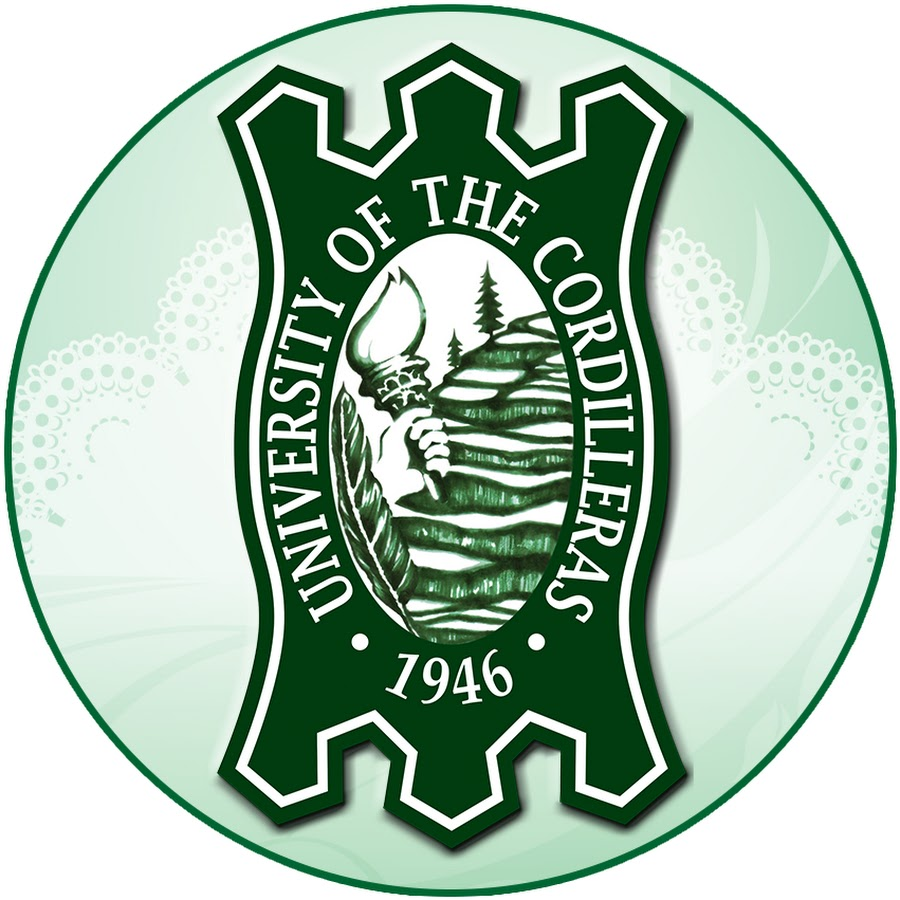

Educational Attainment

University of the Cordilleras
- Bachelor of Science in Information Technology (2020-Present)
- Major in Web Technology
- Department of Science and Technology (DOST) Undergraduate Scholar

STI College - Baguio City
- Technical Vocational Livelihood - Information, Communications and Technology (2018-2020)
- Major in Mobile App and Web Development (MAWD)
- With Honors
- Best in Communication Arts
- Best in Work Immersion
- Tagisan ng Talino - Director's Cut, Nationalist (2020)
- Top 3 Candidate for Best in Research
- Microsoft Society, President (2019-2020)
- One Light Theory, Representative (2018-2019)
Rizal National High School
- With High Honors
- Proficiency Award in English
- Proficiency Award in Social Studies
- Rizalette, Editor-in-Chief (2017-2018)